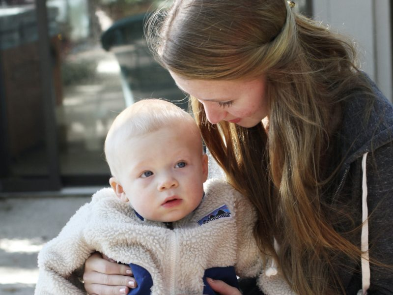

March 15, 2020
Don’t Underestimate the Awesomeness of Youth

If we have learned a lesson from Finely, it is that a light heart can hold serious convictions. Finley admired and drew inspiration from young people—which is why, though almost 18, she convinced her doctors that she should be admitted to the children’s oncology ward. Maybe she saw in others what she felt in herself. If you know a young person who is enamored with nature, show them serious ways to engage their interest—their ability to make a difference may surprise you!
Finley’s story is the inspiration behind Reserva: The Youth Land Trust, an organization that empowers youth to take direct action that both fights climate change and preserves biodiversity. Founded by Finley’s sister, Callie, Reserva is driven chiefly by an international Youth Council—about 50 youth 26 & under who care deeply about nature and want to lead by example in protecting it. Already achieving worldwide recognition, their flagship conservation project is a partnership with Rainforest Trust to create the world’s first entirely youth-funded nature reserve.
Tomorrow’s post is from Henry Proctor, the little guy in this picture. Henry is now 8 years old, can out-identify most of us when it comes to bird species, and he and his sister have already raised over $200 to protect vital habitat for endangered plants and animals in northern Ecuador as part of this youth-funded reserve.